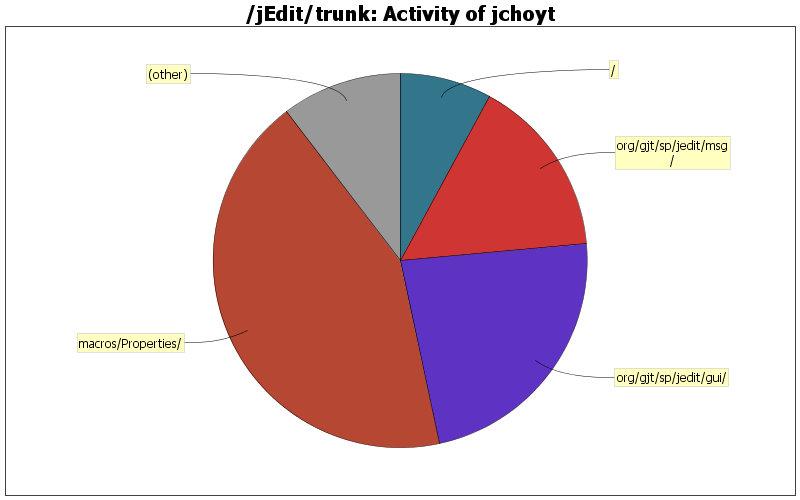

| Directory | Changes | Lines of Code | Lines per Change |
|---|---|---|---|
| Totals | 26 (100.0%) | 755 (100.0%) | 29.0 |
| macros/Properties/ | 3 (11.5%) | 325 (43.0%) | 108.3 |
| org/gjt/sp/jedit/gui/ | 4 (15.4%) | 174 (23.0%) | 43.5 |
| org/gjt/sp/jedit/msg/ | 1 (3.8%) | 118 (15.6%) | 118.0 |
| / | 1 (3.8%) | 60 (7.9%) | 60.0 |
| doc/ | 3 (11.5%) | 24 (3.2%) | 8.0 |
| jars/QuickNotepad/ | 4 (15.4%) | 21 (2.8%) | 5.2 |
| org/gjt/sp/jedit/ | 2 (7.7%) | 16 (2.1%) | 8.0 |
| installer/ | 4 (15.4%) | 9 (1.2%) | 2.2 |
| jars/LatestVersion/ | 3 (11.5%) | 7 (0.9%) | 2.3 |
| package-files/linux/ | 1 (3.8%) | 1 (0.1%) | 1.0 |

Updated to reflectd freezing of CVS repository
2 lines of code changed in 1 file:
fixed Debian (and slack?) startup script to NOT do CD when it starts up - jedit-Bugs-1630001
1 lines of code changed in 1 file:
added -reuseview as default arguement, changed default heap size to 192
2 lines of code changed in 1 file:
changed to have the long description default file be description.html
12 lines of code changed in 4 files:
macro to create a plugin announcement. Also, it does some sanity checks on the properties file.
321 lines of code changed in 1 file:
Corrected filenames to be consistent with 4.2final release. Added instructions to send out an email to the lists after a release.
73 lines of code changed in 2 files:
Added description properties to enable easier releases via the wiz.
33 lines of code changed in 5 files:
took -reuseview back out at Alan's request
1 lines of code changed in 1 file:
Changed default startup script to allow 128MB heap, to use jEdit -resuseview option, and to use the java -server option
3 lines of code changed in 1 file:
changes for build of 4.3pre3. Slightly changed script to create source tarball, added myself to the credits, updated contributor list for this release
8 lines of code changed in 3 files:
Changed mechanism for notifying the ShortcutDisplay plugin from EBMessage based to EventListenerList based.
151 lines of code changed in 3 files:
record changes for prefix notification for ShortcutDisplay plugin
7 lines of code changed in 1 file:
add a new EBMessage subclass to say when jEdit was looking for prefix completions, and when it was done, and make very small changes to the DefaultInputHandler to send the messages on the EditBus
141 lines of code changed in 2 files: